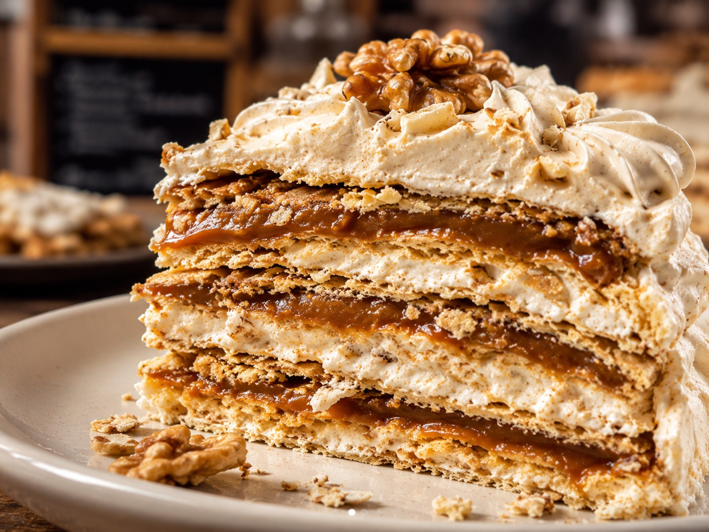
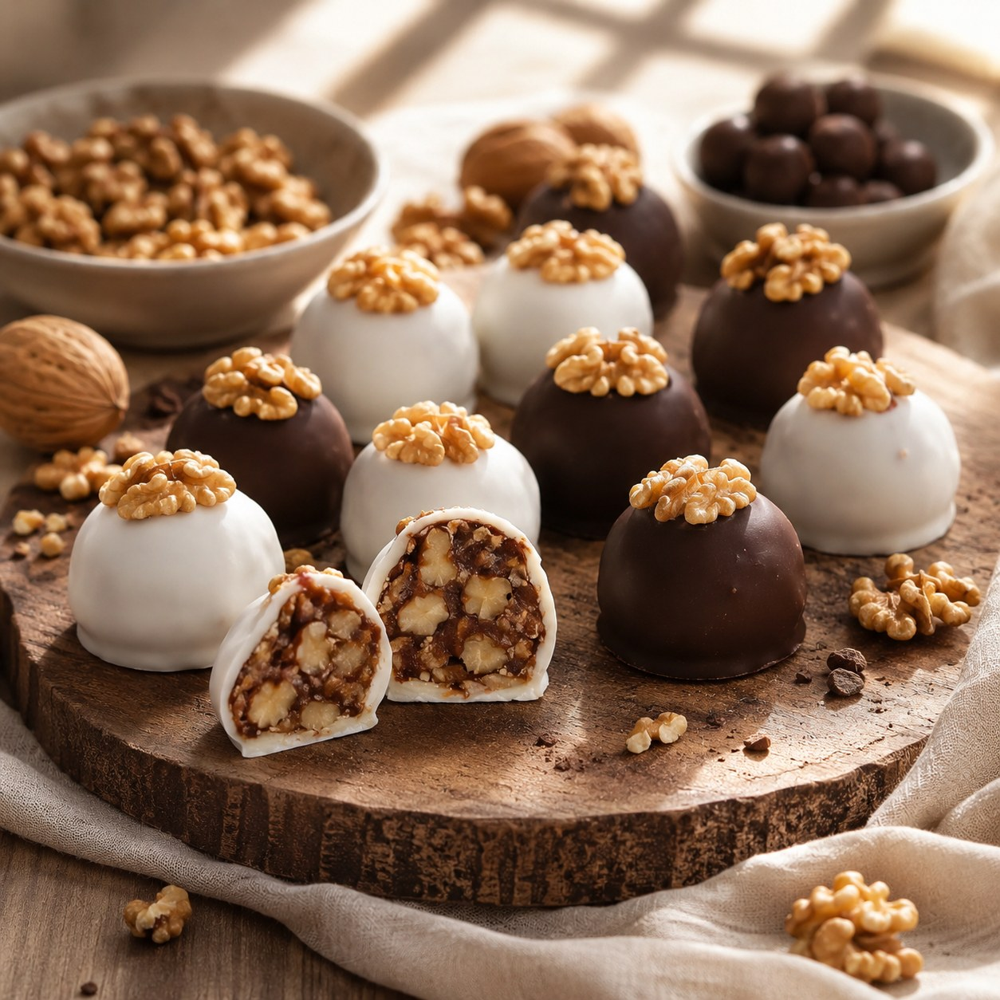

Turrón salteño
El rey de la mesa dulce: capas crocantes, dulce de leche, nueces y merengue.
Ver receta
Una pastelería inspirada en los sabores del norte argentino, con identidad artesanal, regional y moderna.
Una vidriera simple con recetas inspiradas en la pastelería del NOA.

El rey de la mesa dulce: capas crocantes, dulce de leche, nueces y merengue.
Ver receta

Masitas rellenas con dulce de cayote, doradas al horno y terminadas con blanqueo.
Ver recetaMisky Stack nace de una mesa dulce del norte: recetas familiares, ingredientes nobles y postres que mezclan texturas, historia y sabor. Cada preparación busca conservar el espíritu regional con una presentación actual.
El nombre une la dulzura regional con el mundo de la programación. Misky remite a lo dulce y sabroso, mientras que Stack representa las capas de herramientas que se usan para construir una web.
La idea nace del curso full stack: así como una aplicación se arma por capas, estas recetas también se construyen con capas de masa, rellenos, texturas e identidad local.
Por eso la marca combina pastelería del NOA, diseño artesanal y referencias al código, manteniendo una presentación moderna sin perder el espíritu regional.